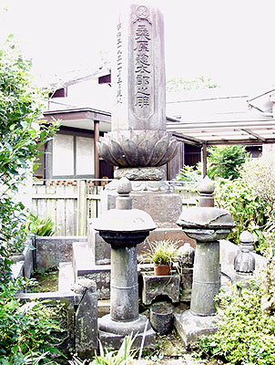

桑原惣太郎之碑（2006.8.17 撮影）  「祖父は宮原坑の囚人監督でした。その元囚人が建てた石碑が実家にあります」。 「桑原惣太郎之碑」との出会いは1通のメールからによる。8月17日、碑を訪ねてみた。
桑原惣太郎、1875年(明治8年)生まれ。 「祖父・桑原惣太郎は団琢磨の給仕からはじまり、石炭運搬業を経て、昭和5年(1930年)ころ 囚人監督で定年を迎えた三井の職員だった」と遺族は語る。
ちなみに団琢磨は1858年福岡藩生まれ。桑原惣太郎とは17歳年上となる。明治30年代、三池炭鉱
をバックに三井財閥の中で発言力を強め、三井の最高指導者になると共に、昭和初期における財界
の最高指導者として活躍した。 碑が建つ桑原家のすぐ近くには、明治31年開坑し昭和6年閉坑した三井三池炭鉱の宮原坑があ る。宮原坑での囚人使役は明治31年から始まり、昭和6年3月に終わっている。そして宮原坑も閉坑。 と同時に桑原惣太郎もほぼ時期を同じくしてその頃三井を退職した。 宮原坑から約500メートルの所に三池集治監(刑務所)があった。カキ色の獄衣に編み笠、手足 を鉄の鎖でつながれた集団が毎日坑内労働のため宮原坑に通ったという。同炭鉱は別名「修羅坑 （シラコ）」とも呼ばれ、囚人たちを苦しめた。 その宮原坑と三池集治監の中ほどに桑原惣太郎家があることを考えると、同人が「宮原坑の 囚人監督をしていた」としても不思議ではない。 ただ、囚人の監督というものは本来刑務所の看守の仕事であることを考えたとき、三井の職員 だったという桑原惣太郎は、坑内外の現場監督のような役割を担っていたのではないかと考える のが妥当かも知れない。 ある大牟田の歴史家は「桑原惣太郎は囚人監督ではなく炭鉱の小頭をしていた。よって、桑原 惣太郎之碑は囚人たちが建てたものではない」と力説する。 しかし、たとえ炭鉱の小頭であったにしても、その下で働く炭鉱労働者の中に三池集治監から 放免された元囚人たちが含まれていてもおかしくはない。
また、三池炭鉱にはその昔「三池保護会」なるものがあった。
「桑原惣太郎之碑」が建立されたのは同人が31歳のとき。そして昭和5年(1930年)頃55歳で定
年を迎え、昭和29年(1954年)、79歳で亡くなった。
しかし大事なのは、遺族が「桑原惣太郎之碑」を誇りとして日々大切にしているということである。
「できることであれば将来、宮原坑の近くにでも碑を移設保存してもらえればありがたい」と、現在も
碑を見守るご婦人が希望する。
|